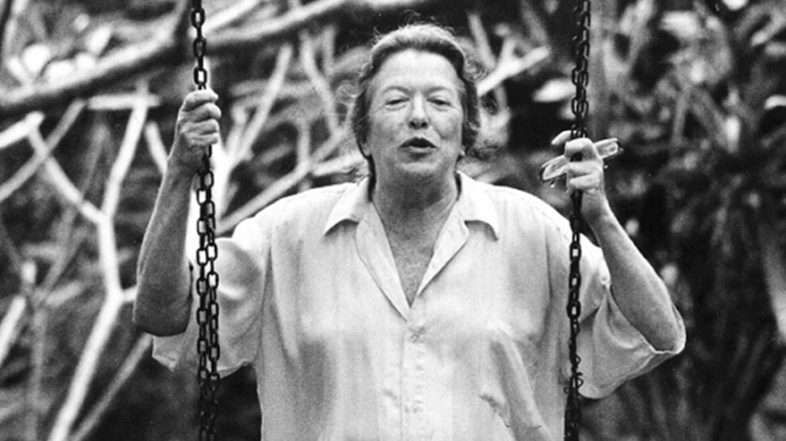

Esta resenha vai desagradar quem defende a diminuição da maioridade penal e costuma dizer “e aí vem os direitos humanos”. Os protagonistas e narradores de “Em Conflito com a Lei”,
de Lucas Verzola, são menores infratores que roubam, traficam, estupram, assassinam, internos da Fundação Casa ou estão em liberdade assistida ou cumprem medidas socioeducativas.
Esse amplo leque é arrasador, pois como exigir civilidade de quem nunca foi tratado como um cidadão e não tem ferramentas mentais para entender a barbárie na qual estão mergulhados: “O menino sem pai sem mãe sem tio sem tia sem irmão sem irmã. Só tem conselheira tutelas. As meninas sem pai sem mãe sem tio sem tia. Pelo menos uma tem a outra de irmã. As meninas no computador da sala mexendo na internet facebook globo yahoo. O menino olha e grita minha vez minha vez. As meninas falam gordo fedido sem mãe retardado. O menino pega a antena e cutuca as meninas. As meninas falam baixinho filha da puta preto vou contar pra tia que você passou a mão em mim. O menino é mentira é mentira. E bate com a antena. E elas choram. E ele chora. E a tia chega. Ele é tarado falou que ia colocar o pau na minha xoxota. É mentira é mentira eu só quero o computador não sou fedido não sou gordo. Menino, isso é coisa de polícia, isso é coisa de promotor, isso é coisa de juiz. O menino sem pai sem mãe sem tio sem tia sem irmão sem irmã com polícia com promotor com juiz. O menino sem”.

O grande feito de Lucas Verzola é mostrar como, acuados entre a aversão da população, a linguagem jurídica incompreensível e as medidas hipócritas, eles, com um vocabulário mínimo elaboram um raciocínio repetitivo curto circuitado, mas sempre expressivo: “Tanto que eu estava tomando conta de um vasinho e pensando no mundão quando os policiais chegaram gritando perdeu perdeu, me obrigando a assumir B.O. de tráfico e a confessar que meu barraco era biqueira, se não apanhava mais e mais, apesar de dor física alguma ser maior que a ilusão de ver tua casa estraçalhada. E, daqui da Fundação, o que eu mais tenho curiosidade é de saber se a minha ausência já se fez tão grande quanto a do Gerson e se ainda chamam meu cantinho de barrado do Wesley, ou se não terei lugar algum pra retornar quando eu sair daqui”.
“Em Conflito com a Lei” deveria ser leitura obrigatória para “coxinhas” e defensores da meritocracia.
|
 |